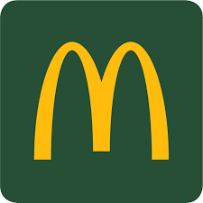

McDonald's began as a small barbecue restaurant run by brothers Richard and Maurice McDonald. In 1954, Ray Kroc, a milkshake machine salesman, discovered the restaurant's efficient “Speedee Service System” and saw massive potential. He franchised the brand, eventually buying it from the brothers and expanding it globally.
Today, McDonald's serves roughly 70 million customers daily in more than 100 countries, operating over 40,000 restaurants (as of the mid-2020s). It's considered a symbol of globalization and American culture.

McDonald's is often called a real estate company disguised as a restaurant.
In 1954, Ray Kroc, a milkshake machine salesman, visited the McDonald brothers and was impressed by their efficiency.
He saw potential for national expansion and opened the first McDonald's franchise in Des Plaines, Illinois, in 1955, forming McDonald's Corporation. Kroc later bought the exclusive rights to the brand, turning McDonald's into a global empire.